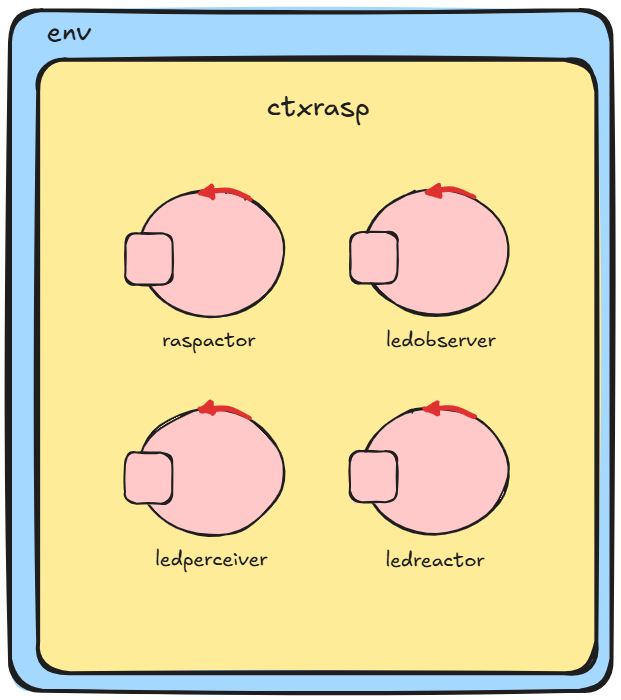

Introduction
Sviluppo del progetto rasp2025ledalone, che consiste in un attore che controlla un led collegato a un Raspberry Pi.
Requirements
Sviluppare un actor che gestisce i Dispatch turnOn e turnOff per accendere/spegnere il Led usando Python ed emettendo tutti i diversi tipi di eventi esprimibili nel Linguaggio qak.
Requirement analysis
Per prima cosa, sarà necessario creare due script in python che gestiscano rispettivamente l'accensione e lo spegnimento del led. Questi risultano semplici e immediati da realizzare e non verranno analizzati oltre.
L'actor dovrà emettere tutti i tipi di eventi esprimibili nel Linguaggio qak, che sono:
- Eventi globali: messaggi trasmessi a tutti gli attori del sistema. Per farlo si usa
emit.
- Eventi locali: messaggi trasmessi solo agli attori nello stesso contesto del mittente. La parola chiave relativa è
emitlocal.
- Eventi stream locali: messaggi trasmessi sotto forma di stream solo agli attori nello stesso contesto del mittente che si siano precedentemente registrati. Si emette usando
emitlocalstream.
- Eventi stream MQTT: messaggi trasmessi sotto forma di stream solo agli attori registrati su un determinato topic MQTT. In questo caso, la parola chiave da usare è
emitstreammqtt.
- Aggiornamento risorse (CoAP): messaggi trasmessi solo a client CoAP. Per emetterli si usa
updateResource.
- Pubblicazione: Messaggi trasmessi su un topic MQTT, ricevuti da tutti gli attori il cui contesto è collegato a un broker MQTT e sottoscritto al topic.
Si emettono usando
publish.
Per questo, oltre all'attore che controlla il led, dovremo avere attori in grado di ricevere ed elaborare tutti questi diversi tipi di eventi.
Software fornito dal committente
- CallerRaspactorTcp.java: programma chiamante via TCP
- CallerRaspactorMqtt.java: programma chiamante via MQTT, con osservazione di eventi
- CallerRaspactorCoap.java: programma chiamante via CoAP, con osservazione di eventi
Problem analysis
Come detto nell'analisi dei requisiti, abbiamo bisogno di attori che possano elaborare i diversi tipi di eventi emessi dall'attore principale del sistema. Potremmo creare un attore per ogni singolo tipo di evento, ma ciò risulterebbe ridondante. È quindi sufficiente svilupparne tre, che coprono le categorie fondamentali:
- Un osservatore passivo di eventi Qak: riceve eventi tramite
emit, emitlocal, emitlocalstream e anche publish se il contesto è connesso a un broker MQTT e sottoscritto al topic
- Un client CoAP che usa
observeResource per ricevere notifiche generate con updateResource
- Un attore che si iscrive esplicitamente a uno stream tramite
subscribeTo
Architettura logica

Test plans
La parte di testing è piuttosto semplice, sarà sufficiente mandare il segnale di accensione e spegnimento e poi controllare l'avvenuta ricezione degli eventi da parte degli attori.
 GIT repo: https://github.com/VBacchelli/ISS2025
GIT repo: https://github.com/VBacchelli/ISS2025